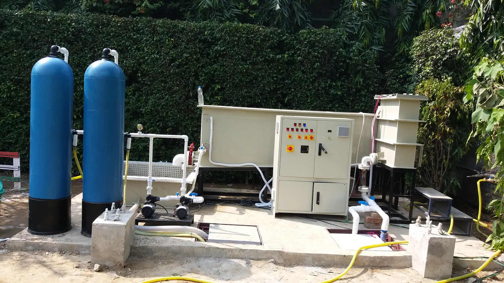

Sewage treatment without chemicals or bacteria
How electro-coagulation and ozone treat sewage in a compact, skid-mounted plant.
Plasto-Fab team · 2 min read

Most sewage plants rely on chemicals, or on bacteria that need time, space and care. Our plants use electricity and ozone instead: a chemical-free, non-biological process in a skid-mounted plant with a small footprint.
Step by step
- Lifting. Raw sewage is pumped from the equalisation or collection tank to the reaction chamber.
- Electro-coagulation. An aluminium-cell reactor applies a controlled electric field. Suspended matter comes together into larger particles, and gas bubbles formed in the cell float it to the surface.
- Ozonation. Ozone disinfects the water. It is more effective than chlorine against viruses and bacteria, leaves no harmful residue, and raises dissolved oxygen.
- Sludge separation. A tube settler separates the sludge, which is removed through a sludge or bag filter.
- Polishing. The water is pumped through a carbon filter for final polishing.
- Reuse. Treated water collects in a tank, ready for its next use.
Why plants choose it
- No chemicals to buy and store, and no bacteria to keep alive.
- Skid-mounted and modular, so it is easy to expand.
- Start and stop it when you like.
- A small footprint, less civil construction and a very low operating cost.
- It can retrofit existing facilities.
We have installed these plants from Gujarat to Egypt. Read about the process in detail on our sewage treatment page, or see the plants we have installed.